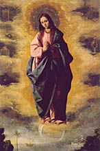
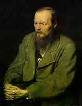

Uno más... porque, si de agradecimientos se trata, no estaría bien olvidar a quien más se debe... y más, estando a las puertas de la fiesta de la Inmaculada Concepción (por estos pagos: "fin de semana largo"):
- —... porque la plegaria de las cosas humildes es inocente. En
cada cosa humilde hay un ángel. ¿Rezas acaso a los ángeles?
—Dios mío... sí... claro que sí...
—No se reza bastante a los ángeles. Dan un poco de miedo a los teólogos, un temor que recuerda las viejas herejías de las Iglesias de Oriente, un temor un poco nervioso... El mundo está lleno de ángeles.
¿Rezas a la Santa Virgen? Es nuestra Madre, ¿comprendes? Es la Madre del genero humano, la nueva Eva. Pero al mismo tiempo, es también su hija.
El mundo antiguo y doloroso, el mundo anterior a la gracia la acunó largo tiempo en su corazón desolado - siglos y más siglos - en la espera obscura, incomprensible de una virgo genitrix... Durante siglos y siglos protegió con sus viejas manos cargadas de crímenes, con sus manos pesadas, a la pequeña doncella maravillosa cuyo nombre ni siquiera sabía. Una pequeña doncella, reina de los ángeles!
Y no hay que olvidar que lo sigue siendo aún. La Edad Media lo comprendió, como comprendió todo.
Pero impide ahora a los imbéciles que rehagan a su manera el «drama de la Encarnación», como lo llaman ! Cuando creen que su prestigio les obliga a vestir como títeres a modestos jueces de paz o a coser galones en la manga de los interventores de ferrocarriles, les avergonzaría confesar a los descreídos que el solo, el único drama, el drama de los dramas —pues no hubo otro— se representó sin decoraciones ni pasamanería. Piensa en lo ocurrido ! El Verbo se hizo carne y los periodistas no supieron nada ! La diaria experiencia enseña que las verdaderas grandezas, aun las humanas : el genio, el heroísmo y hasta el amor -su pobre amor- son tan difíciles de reconocer...! Y tanto es así, que noventa y nueve veces de cien, llevan sus pobres flores retóricas al cementerio; se rinden a los muertos !
La santidad de Dios ! La sencillez de Dios ! Esa terrible sencillez que maldijo el orgullo de los ángeles !
Sin duda, el demonio intentó mirarla frente a frente y la inmensa antorcha llameante en la cima de la Creación se precipitó del golpe en la noche.
El pueblo judío demostró tener la cabeza muy dura. De no ser así, hubiera comprendido que un Dios hecho hombre, realizador de la entera perfección del hombre, podía pasar inadvertido y tenían que fijarse mucho para reconocerlo.
Encuentro tan hermoso el episodio triunfal de la entrada en Jerusalén ! Nuestro Señor se dignó degustar el triunfo, como la muerte, sin rehusar ninguna de nuestras alegrías, sin rechazar más que el pecado. Pero se preocupó de su muerte, de que no faltara en ella ni un detalle... Su triunfo, en cambio... ¿no encuentras que fue bastante infantil? La imagen de Epinal, con el borriquillo, las ramas verdes y los pobres campesinos palmoteando. ¡ Una gentil parodia, un poco irónica, de las magnificencias imperiales ! Nuestro Señor parece sonreír -frecuentemente aparece la sonrisa de Nuestro Señor- y decirnos : «No toméis todo esto demasiado en serio... Pero en fin, existen triunfos legítimos y no está prohibido triunfar. Cuando Juana de Arco entre en Orleáns, bajo las floridas oriflamas, con su resplandiente armadura, no quiero que pueda creer que está procediendo mal. Puesto que tanto lo deseáis, pobre hijos míos, he santificado vuestro triunfo, como bendije el vino de vuestras viñas».
Y con los milagros, fíjate bien, ocurre igual. Jesucristo no hace más milagros que los que son necesarios. Los milagros son como las imágenes del libro, como sus hermosas estampas...
 Pero presta ahora atención, pequeño : la Virgen Santa no ha tenido ni triunfos ni milagros. Su Hijo no permitió que la gloria humana la rozara siquiera. Nadie ha vivido, ha sufrido y ha muerto con tanta sencillez y en una ignorancia tan profunda de su propia dignidad, de una dignidad que, sin embargo, la pone muy por encima de los ángeles.
{kind=link}
Ella nació también sin pecado... que extraña soledad ! Un arroyuelo tan puro, tan límpido y tan puro, que Ella no pudo ver reflejada en él su propia imagen, hecha para la sola alegría del Padre Santo, oh, soledad sagrada ! Los antiguos demonios familiares del hombre, dueños y servidores al mismo tiempo, los terribles patriarcas que guiaron los primeros pasos de Adán en el umbral del mundo maldito, la Astucia y el Orgullo, contemplan desde lejos a esa criatura milagrosa que está fuera de su alcance, invulnerable y desarmada.
Es verdad que nuestra pobre especie no vale mucho; pero aún así, la infancia emociona sus entrañas y la ignorancia de los pequeños le hace bajar los ojos, esos ojos que conocen el bien y el mal, esos ojos que han visto tantas cosas. ¡ Pero no es más que la ignorancia al fin y al cabo ! La Virgen es la inocencia.
Date cuenta de lo que nosotros somos para Ella, nosotros, la raza humana. Ella detesta el pecado, naturalmente, pero no tiene de él experiencia alguna, esa experiencia que ni siquiera les ha faltado a los más grandes Santos, hasta al propio santo de Asís, con lo seráfico que fue. La mirada de la Virgen es la única verdaderamente infantil, la única de niño que se ha dignado fijarse jamás en nuestra vergüenza y nuestra desgracia.
Sí, hijo mío... Para rezar bien las oraciones que a Ella dirigimos tenemos que sentir sobre nosotros esa mirada que no es del todo la de la indulgencia -pues la indulgencia va siempre acompañada, siempre, de alguna amarga experiencia-, sino de tierna compasión, de sorpresa dolorosa, de no sabemos qué sentimientos, una mirada inconcebible, inexpresable, que nos la muestra más joven que el pecado, más joven que la raza de que Ella es originaria y, aunque Madre por la gracia, Madre de las gracias, la más joven del genero humano...
G. Bernanos
Diario de un cura rural
Bueno. Nos vamos, nomás.
Hoy es el último día de "fotos del apocalipsis".
No es que me haya cansado ni aburrido, ni que no se me ocurra qué postear (más bien al contrario). La decisión viene disparada por asuntos laborales (un proyecto a corto plazo que, si sale, me quitaría el poco tiempo que tengo; y que ya me lo está quitando); y viene el verano, buena oportunidad para tomarse (el que escribe y los que leen) unas vacaciones.
Tal vez dentro de algún tiempito (pasado el verano, por ejemplo) vuelva por estos mundos; no creo que retome este blog, de todas maneras, quizás algo parecido, pero no igual. Veremos.
Ha sido algo más de un año y medio, unos 1500 posts, y 80 "números" (semanas). Cuando empecé, no soñaba que esto iba a marchar a este ritmo. Recuerdo que los primeros días me preocupaba por apuntar temas para postear algo cada día, y pensaba que en poco tiempo me iba a quedar sin nada que decir. Fue al revés; a medida que el blog fue tomando forma, se fue convirtiendo en una costumbre placentera (y algo adictiva); en los últimos tiempos, los temas (y los borradores de posts) se me iban acumulando, y lamentaba no tener más tiempo para escribir.
(Hay que decir también, algo que pensaba hace poco: la producción abundante -casi tres posts por día, sostenidos, no es poco...- se debe en buena medida a la insatisfacción: a veces releo el último post, no me gusta demasiado, me parece un poco tonto y me da un poco de vergüenza, me imagino a un visitante que entra por primera vez a la página y encuentra "eso" ... y entonces me apresuro a postear alguna otra cosa (generalmente más impersonal) para "mandar más abajo" al post de gusto dudoso. La semana pasada vi, con asombro, que a TSO le ocurre exactamente lo mismo).
En todo caso, por más modesto que haya sido el resultado, la verdad es que estoy muy contento de haberlo hecho. Personalmente, me ha servido (cuento esto por si hay algún otro...) para aprender algunas cosas (no sólo en términos de afinar la expresión: también por aquello de que enseñar es la mejor manera de aprender). El blog terminó siendo algo distinto de lo imaginado en un principio; pero es que hacerlo me cambió algunas ideas. Y -last but not least- he conocido buena gente por este medio.
Muchas gracias a los lectores, sobre todo a los que han enviado comentarios o aportes; y disculpas por las frecuentes faltas de respuestas o acuses de recibo. Tal vez nos reencontremos en unos meses.
Mientras tanto, pueden seguir disfrutando de de Disputations y Video Meliora.
Y por acá, si algunos mueren, otros van dando sus primeros pasos: además de este, tener en cuenta al recién nacido Ens, que promete (ya pasará algún diseñador por ahí...).
Ha sido un gusto. Hasta la vista.
(PS: Trataré de despegarme del mundo de los blogs; pero
no dejo de estar accesible vía email o icq. Los interesados
pueden anotarse -dejenme un comentario con el email
y un simple "Avisame" en el texto- para que les notifique
en caso de resurrección, reencarnación
o reaparición).
(PS2:
Parte como respuesta a un lector, y parte para mí: ahora
desde la página de archivo
puede uno bajarse todo el blog en un par de zips;
para el que quiera leerlo "offline" en la PC).
La parte sexta de "Los Hermanos Karamazov", corresponde al retrato del starets Zosima, especie de monje ruso, en el que Dostoyevsky hace su pintura de la espiritualidad ortodoxa. No es seguramente de lo más importante de la novela (incluso he visto que algunas ediciones omiten estas páginas), ni es representativo del arte de Dostoyevsky (mucho más lo sería esto). Pero me dieron ganas de trascribir algunas páginas.
Ya que tenemos un blog, aprovechemos para sacarnos los gustos, qué tanto...
Es largo, pero vale la pena.
-
...
Mi padre murió cuando yo tenía sólo dos años, y no le recuerdo en absoluto. Dejó a mi madre una pequeña casa de madera y algo de capital, suficiente, sin ser grande, para vivir libre de estrecheces.
Éramos dos hijos: mi hermano mayor, Markel, y yo, Zinovi.
El era unos ocho años mayor que yo, de carácter impulsivo e irritable, pero bondadoso; no se burlaba de los demás y era muy callado, sobre todo en casa, conmigo, con nuestra madre y con nuestra servidumbre. Estudiaba en el gimnasio, con satisfactorios resultados, pero no hacía buenas migas con sus camaradas, si bien no reñía con ellos; por lo menos así lo explicaba nuestra madre.
Medio año antes de su muerte, cuando había cumplido ya diecisiete años, empezó a visitar con frecuencia a un hombre que llevaba una vida solitaria en nuestra ciudad, algo así como un deportado político, expulsado de Moscú por librepensador. Ese deportado era hombre de mucho saber y un filósofo muy conocido en la Universidad. No sé por qué se encariñó con Markel y empezó a recibirle en su casa. El joven se pasó tardes enteras con él, durante todo el invierno, hasta que reclamaron al deportado a Petersburgo para ocupar un puesto del Estado a petición suya, pues tenía quien le protegía.
Llega la Cuaresma y Markel no quiere observar el ayuno, despotrica contra él y se burla:
—Todo esto son tonterías —dice—, y Dios no existe.
De modo que llenaba de espanto a mi madre, a nuestra servidumbre y a mí mismo, que era pequeño, y aunque sólo tenía nueve años, también me asustaba mucho oír aquellas palabras.
Nuestros criados eran siervos, en total cuatro personas, todos ellos comprados a nombre de un propietario amigo nuestro. Aún recuerdo cómo de estas cuatro personas vendió nuestra, madre una, la cocinera Afimia, coja y entrada en años, por sesenta rublos en billetes, y en su lugar puso a otra cocinera, persona libre.
Y he aquí que a la sexta semana del ayuno, mi hermano empezó a sentirse peor; siempre había sido enfermizo del pecho, era de complexión débil, propenso a la tisis, delgado, flaco, aunque bastante alto y de rostro muy agradable.
No sé si se resfrió o qué, pero el doctor vino y pronto susurró a nuestra madre que se trataba de tisis galopante y que el enfermo no pasaría de la primavera.
Nuestra madre se puso a llorar, empezó a rogar a mi hermano, con mucha precaución (sobre todo para no asustarle), que ayunara, que fuera a la iglesia y se preparara para confesarse y comulgar, pues entonces aún no debía guardar cama.
Al oír esto, mi hermano se irritó y despotricó contra el templo de Dios, pero luego se quedó pensativo: en seguida adivinó que estaba enfermo de gravedad y que por ello nuestra madre quería que, mientras tuviera fuerzas, fuese a la iglesia y comulgase. De todos modos, ya sabía él mismo que estaba enfermo desde hacía tiempo, y un año antes de lo que cuento, nos dijo una vez a mi madre y a mí, con sangre fría, sentados a la mesa:
—No estaré mucho en este mundo entre vosotros, quizá no llegue a vivir ni un año.
Fue como un vaticinio. Pasaron unos tres días y entramos en Semana Santa. Desde el martes por la mañana, mi hermano fue a la iglesia.
—Esto lo hago por usted, mamita, para darle una alegría y tranquilizarla — dijo a nuestra madre.
Ella se puso a llorar de alegría y de pena: "Seguro que su fin está próximo, si se ha operado en él un cambio tan brusco.", pensó.
Pero él no pudo acudir mucho tiempo a la iglesia; tuvo que guardar cama, de modo que le confesaron y le dieron la comunión ya en casa.
Llegaron días claros, luminosos, perfumados, la Pascua era tardía aquel año.
Recuerdo que Markel se pasaba la noche tosiendo, dormía mal, y al llegar la mañana se vestía y procuraba sentarse en un blando sillón.
Así le recuerdo: sentado, quietecito, humilde, sonriéndose, enfermo, pero con la faz alegre. Espiritualmente era otro, distinto por completo; resultaba maravilloso el cambio que se había producido tan súbitamente.
Entraba a verle en la habitación la vieja aya:
—Permíteme, mi niño, que te encienda una mariposa ante el icono.
El no lo habría permitido antes, hasta habría apagado la lucecita.
—Enciéndela, querida, enciéndela; yo era un monstruo cuando te lo prohibía. Tú rezas a Dios al encender la mariposa, yo rezo al alegrarme de tu vista. Así, pues, rezamos al mismo Dios.
Estas palabras nos parecían muy extrañas; nuestra madre se retiraba a su habitación y lloraba, pero al entrar a verle se secaba las lágrimas y ponía cara alegre.
—Mamita, no llores, querida —decía él a veces—, aún viviré mucho, aún tendremos muchas alegrías juntos, porque la vida es hermosa, llena de dicha y de gozo.
—Ay, hijo mío... ¿dónde está para ti la dicha, si de noche la fiebre te consume y toses como si el pecho te fuera a estallar?
—Mamá —le respondía—, no llores, la vida es un paraíso, todos estamos en el paraíso, pero no lo queremos reconocer; si quisiéramos reconocerlo, mañana mismo la tierra quedaría convertida en paraíso.
Todos nos admirábamos de sus palabras, pues hablaba con una rara convicción; nos conmovíamos y llorábamos.
Venían a vernos algunos conocidos:
—Amigos, decía, queridos amigos míos, ¿qué he hecho yo para merecer vuestro afecto, por qué me queréis tanto y cómo es posible que antes no lo supiera, no lo apreciara?
A los criados que entraban en su habitación, les decía a cada momento:
—Queridos míos, ¿por qué me servís? ¿Soy digno de que me prestéis vuestros servicios? Si Dios me perdonara y ,me dejara con vida, yo mismo os serviría a vosotros, pues todos debemos servirnos unos a otros.
Nuestra madre, oyéndole, movía la cabeza:
— Hijo querido, es la enfermedad la que te hace hablar así.
—Madre, alegría de mi vida —decía—, es imposible que no haya señores y siervos; deja, pues, que sea yo servidor de mis criados, como lo son ellos para mí. Y además te diré, mamita, que cada uno de nosotros es culpable de todo ante todos, y yo más que nadie.
Mamá, entonces, hasta se sonrió, lloraba y se sonreía:
—¿En qué —dice— eres más culpable que nadie ante todos? Hay asesinos y bandidos, ¿qué pecados has tenido tiempo de hacer tú, que te culpas más que a nadie?
—Madrecita, gotita de sangre mía —dice (entonces empezó a emplear palabritas cariñosas como éstas, inesperadas)—, mi gotita de sangre entrañable, alegría de mi corazón, has de saber que en verdad cada persona es culpable ante todos, por todos y por todo. No sé cómo explicártelo, pero siento que es así, lo siento hasta atormentarme. ¿Cómo hemos podido vivir, antes, enojándonos y sin saber nada?.
Así se levantaba después del sueño, cada día más y más conmovido, lleno de alegría, temblando todo él de amor.
Venía a veces el doctor, el viejo alemán Eisenschmidt:
—Qué, doctor, ¿viviré aún un día más. en este mundo?—, le preguntaba a veces bromeando mi hermano.
—No un día más, sino muchos días más —solía responderle el doctor—; aún vivirá meses y años.
—¡Para qué años y para qué meses! No es cuestión de contar los días, al hombre le basta un solo día para llegar a conocer toda la felicidad. Queridos míos, para qué reñir, para qué vanagloriarnos, para qué recordar las ofensas. Vamos al jardín, vamos a pasear y a jugar, vamos a amarnos y a alabarnos unos a otros, y a besarnos, y a bendecir esta vida nuestra.
—Su hijo no está para poder vivir mucho en este mundo —dijo el doctor a nuestra madre cuando ella le acompañó hasta la puerta—, la enfermedad le ha turbado la razón.
Las ventanas de su cuarto daban al jardín, y nuestro jardín era umbroso, con viejos árboles en que comenzaban a apuntar las yemas; empezaron a llegar al jardín los primeros pájaros, que se pusieron a retozar y a cantar junto a sus ventanas. De pronto, mientras los contemplaba embelesado, se puso a pedirles perdón también a ellos :
—Pájaros del buen Dios, pajaritos risueños, perdonadme también vosotros, porque yo también ante vosotros he pecado.
Entonces, en nuestra casa, nadie podía entender eso, pero él lloraba de alegría.
—Sí —decía—, toda esta gloria divina estaba a mi alrededor: pájaros, árboles, prados, cielos, sólo yo vivía en la vergüenza, y solo lo deshonraba todo, y no veía la hermosura y la gloria.
—Son muchos los pecados que sobre ti tomas —le decía llorando nuestra madre, a veces.
—Madrecita, alegría de mi corazón, lloro de gozo, no de pena; yo mismo deseo ser culpable ante ellos, sólo que no puedo explicártelo, pues no sé cómo puedo quererlos. Que sea yo pecador ante todos; en cambio, todos me perdonarán, y eso es el paraíso. ¿Acaso no estoy ahora en el paraíso?
Y hubo mucho más, que no hay modo de recordar y referir.
Una vez entré en su habitación solo, cuando no había nadie con él. Era al caer de la tarde, una hora llena de luz, el sol iba a su ocaso y alumbrada toda la estancia con sus rayos oblicuos. Me había visto y me había hecho una señal para que entrara. Yo me acerqué; me tomó con ambas manos por los hombros, me miró a la cara con ternura, con amor; no me dijo nada, sólo me miró así cosa de un minuto:
—Bueno —dijo luego—, ahora vete, juega, ¡vive por mi!.
Salí y me fui a jugar.
Después, a lo largo de la vida, he recordado muchas veces, ya con lágrimas, cómo me había mandado vivir por él...
...
Joven, no te olvides de rezar. En tu plegaria, si es sincera, se encenderá un sentimiento nuevo y en él se dará una nueva idea que tú antes desconocías y que volverá a reanimarte; y comprenderás que la plegaria es educación.
Recuerda aún: cada día y siempre que puedas, repite en tu fuero interno: "Señor, perdona a todos los que ante ti comparezcan en este momento".
Pues a cada hora y a cada instante miles de personas dejan su vida en la tierra y sus almas se presentan ante el Señor. Y cuántas, entre ellas, se han separado de la tierra en plena soledad, sin un amigo al lado, tristes y angustiadas de que nadie las compadezca y de que nadie sepa de ellas, ni siquiera, si han vivido o no. Y es posible que, desde el otro extremo de la tierra, tu plegaria se eleve a Dios por el alma de un ser humano aunque tú no le hayas conocido nunca ni te haya conocido él a ti. Cuán hermoso ha de ser para esa alma desconocida, llegada presa de miedo ante el Señor, sentir en ese instante que también hay quien reza por ella, y ha quedado en la tierra un ser humano que también a ella la quiere. Dios os mirará con más misericordia al uno y al otro, pues si tú has sentido por ese hombre tanta compasión, tanto más le compadecerá El, que es infinitamente más misericordioso y capaz de amar que tú. Y le perdonará por ti.

No temas el pecado de los hombres; ama al hombre incluso en su pecado, pues semejante amor, imagen del amor divino, es el amor supremo en la tierra.
Ama a toda la creación, tanto en su conjunto como en cada granito de arena.
Ama cada hojita, cada rayo de luz.
Ama a los animales, ama a las plantas, ama cada una de las cosas existentes.
En las cosas encontrarás el secreto divino. Cuando lo hayas encontrado una vez, empezarás a conocerlo incesantemente, más y más, todos los días.
Y amarás, por fin, al mundo todo ya con un amor total, con un amor universal.
Ama a los animales: Dios les ha dado un germen de inteligencia y una alegría sosegada. No los turbes, no los tortures, no les quites esa alegría, no te opongas al designio de Dios.
Hombre, no te alces con orgullo por encima de los animales: no conocen el pecado, mientras que tú, con tu grandeza, corrompes la tierra con tu aparición y dejas una huella infecta por donde pasas. ¡Así es, ay, casi con cada uno de nosotros!
Ama sobre todo a los niños, pues también ellos están limpios de pecado, como los ángeles, y viven para conmovernos con su ternura, para la purificación de nuestros corazones, como cierta indicación que se nos hace.
¡Ay de quien ofenda a un niño !...
... A veces te sientes perplejo ante otro pensamiento, sobre todo al ver el pecado de los hombres, y te preguntas: "¿Hay que recurrir a la fuerza, o al amor humilde?" Decidete siempre por "el amor humilde". Decídelo así de una vez para siempre y podrás conquistar el mundo entero.
El amor humilde es una fuerza terrible, la más potente de todas las fuerzas; nada hay que se le pueda comparar.
Cada día, cada hora, cada minuto, obsérvate y procura que tu imagen sea luminosa.
Pasas cerca de un niño, pasas colérico, dejas escapar una mala palabra, llena de ira el alma; tú quizá ni te has dado cuenta de la presencia del niño, pero él te ha visto y es posible que tu imagen desagradable y ofensiva se quede grabada en su corazón indefenso. Tú no lo supiste, pero quizás has arrojado ya en él una semilla mala, que quizá germine, y todo ello por no haberte contenido ante la criaturita, por no haber educado en ti el amor circunspecto y activo.
Hermanos, el amor es un gran maestro, pero es necesario saberlo adquirir, no es fácil, se compra caro, mediante un largo trabajo y a través de un plazo largo; pues no se ha de amar solo momentáneamente y por azar, sino para siempre. Al azar, todo el mundo es capaz de amar, incluso el malvado.
Mi joven hermano pedía perdón a los pájaros: diríase que esto carece de sentido, pero es justo, pues todo se parece al océano, todo fluye y entra en contacto; tocas en un punto y ello repercute en el otro extremo del mundo.
Aunque sea una locura pedir perdón a los pájaros: igual, a tu lado, los pájaros se sentirían mejor, lo mismo que los niños y todos los animales, si tú mismo fueras más bondadoso de lo que eres, si tuvieras una sola gotita más de bondad.
Todo es como el océano, os digo.
Cuando lo hayas comprendido, también rezarás a los pájaros, torturado por un amor universal, y les rogarás que te perdonen los pecados.
Ten en mucha estima ese entusiasmo, por absurdo que pueda parecer a las gentes.
Amigos míos, pedid a Dios que os conceda alegría. Sed alegres como los niños, como los pájaros del cielo. Que no os conturben los pecados de los hombres, no temáis que el pecado borre lo que hagáis ni que le impida manifestarse; no digáis: "El pecado es poderoso, la deshonestidad es fuerte, el nefasto ambiente pesa mucho y nosotros somos solitarios e impotentes, el ambiente ominoso nos barrerá y no dejará que la obra piadosa llegue a dar fruto."
¡Huid, hijos míos, de semejante desaliento!
No hay más que un medio de salvación : toma sobre ti todos los pecados de los hombres y hazte responsable de ellos.
En verdad, así es, amigo mío, pues tan pronto como te haces sinceramente responsable de todo y de todos, ves en seguida que, en realidad, eres culpable por todos y por todo. Pero si cargas tu propia pereza y tu impotencia sobre los demás, acabarás haciendo tuyo el orgullo satánico y empezarás a murmurar contra Dios.
En cuanto al orgullo satánico, pienso lo siguiente: nos es difícil en la tierra llegar a comprenderlo, y por esto resulta tanto más fácil caer en el error y aceptar el orgullo demoníaco, creyendo, además, que hacemos algo grande y admirable.
Tampoco podemos llegar a comprender mucho de lo que hay en los sentimientos y movimientos más fuertes de nuestra naturaleza mientras dura nuestra existencia terrena; pero no te escandalices por ello y no creas que ello pueda servirte de justificación alguna, pues el juez eterno te pedirá cuentas de lo que has podido comprender y no de lo que está fuera de tu alcance. Tú mismo te convencerás de que es así y entonces todo lo verás con acierto y ya no te pondrás a discutir.
La verdad es que pasamos por la tierra como a tientas; y, de no tener delante la preciosa imagen de Cristo, sucumbiríamos y nos perderíamos por completo como el género humano antes dei diluvio.
Muchas son las cosas de la tierra que se nos mantienen ocultas; en cambio, se nos ha concedido el don, misterioso y secreto, de percibir nuestro nexo vivo con el mundo del más allá, con un mundo superior y mejor, aparte de que las raíces de nuestros pensamientos y sentimientos no se dan aquí, sino en otro mundo.
Por esto dicen los filósofos que no es posible llegar a conocer en la tierra la esencia de las cosas.
Dios tomó semillas de los otros mundos, las sembró en la tierra y cultivó su jardín; ha brotado cuanto podía brotar, pero lo que se ha criado vive y se conserva vivo sólo gracias a la sensación del propio contacto con los otros mundos misteriosos; si tal sentimiento en ti se debilita o se aniquila, muere también lo que en ti ha germinado. Entonces te vuelves indiferente a la vida y hasta llegas a odiarla.
Esto es lo que yo pienso.
Recuerda, sobre todo, que no puedes ser juez de nadie. Pues no puede haber en la tierra juez de criminal antes de que ese propio juez llegue a comprender que él mismo es un criminal como el que tiene delante, y que él, precisamente, es quizá más culpable que nadie por el crimen del otro hombre. Cuando lo haya comprendido así, podrá ser juez.
Esta es la verdad, por absurda que parezca.
Pues de haber sido yo mismo justo, es posible que no existiera el criminal que está ahora de pie en mi presencia.
Si eres capaz de tomar sobre ti el crimen del delincuente que está ante ti y a quien juzgas en tu corazón, hazlo en seguida y sufre por él; en cuanto al criminal, déjale marchar sin hacerle el menor reproche. Y hasta si la ley te ha instituido en juez, obra también con ese espíritu en cuanto te sea posible, pues el delincuente se irá y se condenará a sí mismo con mucha más severidad de lo que lo habría hecho tu tribunal. Si se aparta insensible a tu dulzura y burlándose, incluso, de ti, no te dejes arrastrar tampoco por ello: eso significa que para él no ha llegado aún el momento, pero llegará a su hora; y si no llega, no importa, otro comprenderá por él y sufrirá, se juzgará y se acusará a sí mismo, y la verdad quedará afirmada.
Cree en esto, créelo sin dudar, pues en ello radica toda la firme esperanza y la fe de los santos.
No cedas al cansancio. Si al acostarte a dormir te acuerdas de tu carga y dices: "No he cumplido lo que debía", levántate inmediatamente y cúmplelo. Si la gente que te rodea, airada e insensible, no quiere escucharte, échate a sus pies y pídeles perdón, pues en verdad también tú tienes la culpa de que no deseen escucharte. Y si no puedes hablar ya con quienes estén enfurecidos, sírveles en silencio y con humildad, sin perder nunca la esperanza.
Y si, no obstante, todos te abandonan o te expulsan a la fuerza: cuando te quedes solo, déjate caer sobre la tierra y bésala, riégala con tus lágrimas; con ellas, la tierra dará fruto, aunque nadie te vea ni te oiga en tu soledad. Cree hasta el fin, incluso si se diera el caso de que todos en la tierra se corrompieran y sólo tú conservaras la fe: también entonces haz ofrenda de tu sacrificio a Dios y glorifícale tú, el único fiel que haya quedado.
Y si os encontráis dos fieles, ya tendréis entonces todo un mundo, el mundo del amor vivo; abrazaos con emoción y alabad al Señor; pues, aunque sea en vosotros dos, su verdad se habrá cumplido.
Si llegas a pecar tú mismo y te sientes agobiado hasta la muerte por tus pecados o te pesa un pecado repentino, alégrate por otro, por el justo, alégrate pensando que si tú has pecado, otro es justo y sin mancha.
Si, a pesar de todo, la maldad de los hombres te conturba llenándote de indignación y temor invencibles, incluso hasta el punto de desear la venganza de los malvados, teme ese sentimiento más que a otra cosa; búscate inmediatamente mortificaciones, como si fueras tú el culpable de aquella maldad de los hombres.
Acepta esos dolores, súfrelos; tu corazón se calmará y comprenderá que tú mismo eres culpable, pues habrías podido iluminar a esos malvados incluso en calidad de hombre único sin pecado, y no lo has hecho. De haber resplandecido tu virtud, tu luz habría alumbrado el camino a otros, y quien ha cometido la maldad, quizá no la habría cometido de haber recibido tu luz.
E incluso si no falta la luz de tu ejemplo y ves que ni con ella se salvan los hombres, mantente firme y no dudes de la fuerza de la luz celestial; cree que si ahora no se salvan, se salvarán más tarde. Y si no se salvan más tarde, se salvarán sus hijos, pues tu luz no morirá, aunque ya hayas muerto tú.
El justo se va, pero su luz queda.
El hombre se salva siempre después de la muerte del salvador.
La humanidad no acepta a sus profetas y los extermina, pero los hombres quieren a sus mártires y honran a aquellos a quienes han torturado.
Tú trabajas por todos, obras para el futuro. No busques nunca una recompensa, pues sin ella ya es grande la que tienes en esta tierra: la alegría espiritual que sólo el justo llega a alcanzar. No temas ni a los encumbrados ni a los fuertes, pero sé prudente y siempre digno. Que no te falte el sentido de la medida, conoce los plazos, adquiere ese sentido y este conocimiento.
Cuando te quedes solo, reza.
Toma cariño al acto de prosternarte y besar la tierra. Besa la tierra y ama infatigable, insaciablemente, ama a todos, ámalo todo, busca en ello el entusiasmo y el éxtasis. Empapa la tierra con las lágrimas de tu alegría y ama esas lágrimas tuyas...
F. Dostoyevsky
Los hermanos Karamazov (Libro VI)
"Me voy, me voy, me vivo yendo ..." (Jaime Ross)
-
Pongo en papel celofán
mi corazón con sigilo;
mañana me enterrarán ...
¡Qué tranquilos que estarán!
Y yo estaré más tranquilo.
L. Castellani
-
... Así, agotando a Dios con nuestra paciencia, le obligamos a
transformar el tiempo en eternidad.
Una paciencia capaz de cansar a Dios procede de una humildad infinita.
La humildad nos da poder sobre Él.
Sólo la nada perfectamente vacía puede adherirse al ser perfectamente compacto.
Sólo por la humildad podemos ser perfectos como nuestro Padre.
Es necesario un corazón completamente triturado.
Una oración realizada mediante gestos, como la de la hormiga que sube y cae, es más humilde aún que una oración con palabras o incluso con gritos interiores o con una orientación silenciosa del deseo. Es saber que no se puede nada, y sin embargo agotarse en esfuerzos conocidos como inútiles, en la humilde espera del día en que quizá esto sea advertido por el Poder al que uno no se atreve a implorar.
No hay actitud de mayor humildad que la espera muda y paciente.
Es la actitud del esclavo atento a cualquier orden del amo, o a la ausencia de orden.
La espera es la pasividad del pensamiento en acto.
La espera es transmutadora de tiempo en eternidad.
«Darán frutos en la espera».
La soberbia de la carne consiste en creer que tiene ascendiente sobre el porvenir, que el hambre le da derecho a comer próximamente, que la sed le da derecho a beber próximamente.
La privación la desengaña y le hace experimentar en forma de angustia la incertidumbre del porvenir, la ausencia de asidero, la total impotencia del hombre sobre el porvenir, incluso cercano.
El grito del orgullo es «el futuro es mío», en la forma que sea.
La humildad es el conocimiento de la verdad contraria.
Si sólo el presente es mío, yo soy nada, pues el presente es nada.
El pan transcendente es el pan de hoy; también es el alimento del alma humilde.
Todos los pecados son intentos de huir del tiempo.
La virtud es sufrir el tiempo, presionar el tiempo sobre el corazón hasta triturar el corazón.
Entonces se está en lo eterno.
La desdicha hiela el alma reduciéndola al presente, a su pesar.
La humildad es el consentimiento a esta reducción.
La humildad es el consentimiento a lo que horroriza a la naturaleza, la nada.
Yo no soy y consiento en no ser, pues no soy el bien y quiero que sólo el bien sea.
Dios estaría celoso de un amor así si no tuviera su perfección como Cristo.
Dios quiere ser, no porque él es sí mismo, sino porque él es el bien.
El Padre hace ser al Hijo por amor, porque el Hijo es el Bien.
El Hijo no quiere ser por amor, porque sólo el Padre es el Bien.
Para el Padre, Dios es el Hijo.
Para el Hijo, Dios es el Padre.
Los dos tienen razón, y esto forma una sola verdad.
Así, Ellos son dos Personas y un solo Dios.
El Padre es creación del ser, el Hijo es renuncia a ser; esta doble pulsación es un único acto que es Amor o Espíritu.
Cuando la humildad nos da parte en él, la Trinidad es en nosotros.
Este intercambio de amor entre el Padre y el Hijo pasa por la creación.
No se nos pide nada más que consentir a ese paso.
No somos más que ese consentimiento.
Simone Weil (notas)
Me han llegado, a cuento de esto algunos comentarios; a favor del laicismo, básicamente; rechazando la "injerencia" del catolicismo en la vida pública, y ejemplificando con la posición de la Iglesia frente al divorcio, y evocando las teocracias musulmanas, y ... etc.
"Un católico no puede imponer su cosmovisión a los demás" ... "me molesta cuando pretenden imponer sus visiones respecto a la sexualidad " ... "hasta hace relativamente poco tiempo no habia divorcio por la oposicion de la iglesia, lo que obligaba a quienes no comparten el compromiso ante un dios a 'encadenarse' legalmente al menos a alguien".
Confieso que me resulta muy difícil mantener la paciencia ante estos argumentos. Me cuesta simpatizar mínimamente con semejantes objeciones (y hay que simpatizar mínimamente para poder poder discutir con alguna esperanza de fruto). Me cuesta imaginar qué concepto del hombre y de la sociedad hay atrás de eso. Y hasta me hace gracia, esa especie de inconsistencia: concebir al matrimonio como una especie de contrato cuyos términos (cuya idea, digamos) son inventados por los contrayentes; como una idea que se les ha ocurrido a ellos... o en todo caso, como una creación de las generaciones anteriores que los contemporáneos están o no en libertad de tomar, dejar o reformar. Me imagino un hombre y una mujer que, pongamos, deciden casarse por el término de 18 meses, y que se quejan por la opresión de la sociedad que nos les permite eso; o del que quiere casarse con tres mujeres; o con la hija. O con el gato... Quién es la
Si quisiéramos ir al fondo de la cuestión, llegaríamos a la lucha entre el individualismo moderno (el hombre que se crea a sí mismo, y es su propio fin) contra todas las religiones y filosofías tradicionales. (Adivinen quién va ganando...).
Pero, claro, no podemos intentar ir tan lejos: antes de mitad de camino ya nos habríamos alejado tanto uno del otro que no podríamos escucharnos.
Dejo entonces esto, y voy hacia otra dirección: veamos
eso de la "pretensión de la Iglesia de imponer su
idea del bien y del mal a los que no son católicos".
Veamos: mis creencias morales, por ejemplo. Yo soy católico.
Yo creo que hay cosas -acciones humanas-
que están mal. Ahora bien, dentro de esas cosas,
hay algunas que [yo creo que] están mal
porque contrarían los preceptos de la Iglesia (no ir a misa,
comer carne un viernes santo, tratar sin reverencia
objectos religiosos, faltar el respeto o la obediencia
a la autoridad eclesial, etc) y otros que están mal
simplemente porque contrarían la moral "natural".
Este segundo grupo de acciones malas es mucho
más extenso y más fundamental que el primero
(suele ponerse como prototipo de esta división
los tres primeros mandamientos frente a los otros siete).
Y bien: yo creo que este tipo de acciones
son malas para todos; mientras que las primeras, sólo
para los católicos (un chino del siglo I no será culpable
de no ir a misa; sí lo será de asesinar a alguien).
Yo creo entonces que esta "moral natural" es "universal"
(obliga a todos, siempre) [Saltarán en este punto los objetores
que dirán que la moral es variable; salten nomás];
y no depende de la revelación cristiana (bien que,
por ser Cristo quien es, y por ser la Iglesia lo que es,
su sanción enseña o ayuda a discernir).
Entonces, cuando la Iglesia se opone a una ley (como la del
divorcio), no lo hace en defensa de la religión cristiana.
Lo hace en defensa del bien, pura y simplemente.
El divorcio está mal, no porque Jesús lo haya dicho, ni
porque exista el sacramento del matrimonio dentro del cristianismo;
está mal, simplemente (como está mal el asesinato, el robo,
la mentira), porque el matrimonio
-monógamo, permanente... y heterosexual- es un bien
propio del ser humano, que no depende de leyes, costumbres,
ni religiones, sino de la propia esencia -creada!- del hombre.
Todos los lectores no católicos -y algunos católicos, supongo-
se estarán sonriendo; esto les parecerá una barbaridad.
Bien, tienen todo el derecho de creer que estamos equivocados.
Lo que no tienen derecho es a protestar contra la Iglesia
porque ella protesta cuando ve que se viola el orden natural,
es decir que se daña al hombre. Es su deber; y no sale gratis,
como sabrán.
Alguno a su vez objetará:
- "Pero vos -y los católicos en general-
creen eso porque lo ven así, o porque
simplemente la Iglesia lo enseña ? Lo primero, me costaría creeerlo,
puesto que son casi los únicos; me costaría creer que practicamente
todos los que ven claro en las cuestiones morales están
en el bando católico, vamos. Y si lo segundo, si no lo ves
pero lo creés porque creés lo que dice la Iglesia, todo
tu discurso de la moral natural, de la independencia de esa
moral de la religión revelada... se me viene abajo, que querés que
te diga"
Yo pongo en primer lugar esta convicción (patente para mí): tiendo a la verdad, y al mismo tiempo le escapo. O mejor: la parte mejor de mi alma quiere la verdad y solo la verdad; la parte baja de mi alma quiere seguridades, quiere adulación, aprobación social y vanidad; el mundo (para empezar) alienta la parte baja. La bestia de platón. Millones de alemanes inteligentes y buenos fueron nazis; el resto del mundo, todas las sociedades, yo mismo, no somos mejores.
Solo cuando las vientos que agita el mundo pasan o cambian, la parte baja se calla un poco, y uno puede discernir mejor la verdad. Mientras tanto, uno tiene que agarrarse de algún lado; la Iglesia es una de esas anclas (no la única seguramente, pero sí la única eterna). En tanto la Iglesia le sirva al católico para eso, para resistir los vientos y aguantar en la verdad, en ese sentido el católico puede tener ventaja frente al resto. (es el caso general? eso es otro tema). En ese sentido se aplica la frase de Chesterton.
Un ejemplo. C. S. Lewis, gran apologeta cristiano, de muy buena vista para ver las trampas del mundo, no era católico. Al escribir sobre el "matrimonio cristiano" (cap 3.6 de "Mero cristianismo"; muy buen capítulo de un muy buen libro) "hace agua" cuando tiene que tocar el tema del divorcio (civil, para los no cristianos). Tolkien, que no era precisamente un apologeta ni un especialista en cuestiones religiosas, pero que era un católico de fe firme y cabeza clara, le escribe un carta reprochándole eso, y poniendo los puntos sobre las íes, en una carta del 1943. Trascribo del borrador (recortando y retocando levemente):
-
... Dices «Me enfadaría mucho si los mahometanos intentaran
impedir que el resto de nosotros bebiera vino». Con
justicia. Consideremos este punto tan sólo, para empezar.
¿Por qué nos enfadaría? Pues bien, si tratamos de ascender directamente a un plano racional y dejar atrás el mero enfado con cualquiera que entorpezca nuestros hábitos (sean ellos buenos o malos), la respuesta es: porque los mahometanos serían culpables de injusticia. Nos estarían dañando al impedirnos compartir un derecho humano universal, el moderado consumo de vino, en contra de nuestra voluntad.
Por otro lado, te manifiestas de cabal acuerdo con la concepción cristiana matrimonio -monógamo, permanente, rígidamente «fiel»- el cual es, de hecho, la verdad sobre la conducta sexual para toda la humanidad: éste es el único camino a la salud total para todos los hombres y mujeres, incluyendo al sexo en su sitio adecuado (el matrimonio cristiano no es una prohibición del contacto sexual, sino la manera correcta de su temperancia; de hecho, probablemente la mejor manera de obtener un placer sexual más satisfactorio, así como la temperancia alcohólica es la mejor manera de disfrutar el vino y la cerveza.)
Que todo esto no se adecue con la presente psicología sexual de los hombres, no le quita validez, como tú lo adviertes: «Creo que es el instinto lo que ha perdido el rumbo», dices. Y en verdad, si no fuera así, sería una intolerable injusticia imponer la monogamia permanente, aun a los cristianos.
Si el matrimonio cristiano fuera en última instancia «antinatural» (del mismo tipo, por ejemplo, de la ingestión de carnes de acuerdo con ciertas reglas monásticas), sólo podría imponerse de acuerdo con «un orden de castidad especial» eclesiástico, no de acuerdo con la Iglesia universal. Ningún detalle de la moral obligatoria cristiana es válido sólo para los cristianos.
¿No tengo, pues, razón al pensar que tu referencia a los mahometanos resulta un indicio falso? No creo que puedas dar apoyo a tu «política» mediante este argumento, pues de ese modo traicionas los cimientos mismos del matrimonio cristiano. Los cimientos consisten en que ésta es la manera correcta de «gobernar la maquinaria humana». Tu argumento los reduce meramente a un modo de (quizás) obtener un rendimiento adicional de algunas maquinarias seleccionadas.
El dolor que experimentan los cristianos ante el divorcio legal es en última instancia precisamente eso: el dolor que se experimenta al ver maquinarias arruinadas por el maltrato que se les da. La tolerancia del divorcio -si un cristiano puede tolerarlo- es la tolerancia del abuso humano, que requiere circunstancias espaciales y temporales especiales que la justifiquen (como sucede con la tolerancia de la usura), si es que el divorcio o la verdadera usura pueden tolerarse en absoluto, aun por motivos de eficacia.
Un cristiano cree que toda la gente
que recurre al «divorcio» -por cierto, el divorcio tal como
está ahora legalizado- está maltratando la maquinaria humana
(sea cual fuere la defensa filosófica que esgriman) tan
cierto como los hombres que se emborrachan (sin duda,
también con una defensa filosófica). Con su conducta se
dañan a sí mismos, a sus prójimos y a la sociedad.
Y la mala
conducta (si es verdaderamente mala de acuerdo con
principios universales) es progresiva, siempre: nunca se
detiene en «no tan buena» o «la que sigue en mérito»; o bien
se reforma o procede a «la tercera categoría», «mala»,
«abominable».
Has mostrado también que la ruptura de la reticencia sexual en
nuestro tiempo no ha mejorado las cosas, sino que las ha
empeorado. De cualquier modo, cualquiera puede ver que la
enorme difusión y la facilitación del «divorcio» en nuestros
días desde los de la sociedad de tiempos de Trollope
(digamos) han hecho mucho mal social.
Y así hemos llegado a una situación en la que la
gente ordinaria sin filosofía ni religión no sólo no es
apartada por la ley de la inconstancia, sino que la ley y el
hábito social la alientan a ella. Apenas me es necesario
añadir que se está produciendo una situación en la que es
difícil criar a un joven cristiano de acuerdo con la moral
sexual cristiana (que es, por hipótesis, la moral correcta
para todos, y que se perderá, salvo la que dependa del joven
cristiano para su mantenimiento).
Si nos situamos en el plano biológico-sociológico,
entiendo (de acuerdo con Huxley y otros) que la
monogamia es altamente beneficiosa para una
comunidad; pero en este plano, la permanencia y la
fidelidad rígidas no parecen a primera vista
esenciales. Todo lo que el «director social»
parecería requerir es un alto grado de continencia
sexual. Pero ¿se ha logrado esto nunca o puede de
hecho lograrse sin «sanciones» o una reglamentación
religioso-legal que otorgue «venerabilidad» al
contrato matrimonial? No parece probable.
Quizá la batalla se pierda, pero no puedo dejar de sospechar
que los que luchan contra el divorcio en este caso
legal y religioso son los que llevan la razón.
"Sentire cum ecclesia" : cuán a menudo descubre uno
que ésta es una verdadera guía. Digo esto con tanto
énfasis porque sobre este punto yo mismo
disentía sentimentalmente (no expresamente, pues me
someto a la obediencia salvadora). Pero me engañaba
entonces la ilusión de que el matrimonio cristiano
era sólo una conducta especial de mi «secta u
orden».
Parece que anda dando vueltas en algunos círculos protestantes del norte (y, por contagio, también entre algunos católicos), una "Open Theology" que, entre otras cosas, niega la proposición (de la teología tradicional): "Dios conoce todo, incluso el futuro, incluso los futuros potenciales".
Así, por ejemplo, uno se saca de encima el problema de la predestinación vs el libre albedrío; e incluso, como permite imaginar que Dios mismo tiene una voluntad libre que ejercita en el tiempo...
Responde Tom:
-
... el argumento se reduce a esto:
-
Puesto que el ser futuro
no existe, podríamos decir que Dios no lo conoce, ya que no es
una limitación de la omnipotencia divina el no conocer lo que no existe
(como tampoco lo es el no poder hacer que 2 + 2 = 5). El futuro
sólo puede decirse que existe como "futuro potencial", y sólo bajo
ese aspecto Dios puede "conocerlo". Entonces, si Dios conoce
el futuro potencial, pero no el futuro concreto, eso sugiere que su conocimiento
se parece al nuestro, sólo que es mucho mejor. El conoce todos los futuros
potenciales, del parecido modo al que una (super)inteligencia humana conocería
todos los finales de una partida de ajedrez.
Dicho simplemente, el error de afirmar que Dios no puede conocer el ser futuro se basa en el error de que hay un futuro relativo a Dios. Pues para que exista en Dios un futuro, debe existir en Dios un tiempo, o sea, cambio: pero Dios no cambia. Dios es inmutable, así como es simple, por lo cual no puede darse un seccionamiento de su inteligencia, para que quede comprendida dentro del tiempo "a partir de cuando" creó el mundo.
Francamente, prefiero quedarme con "el problema de la predestinación"
(que es más bien un misterio) a quedarme con el problema de un
Dios que cualquier día tiene un conocimiento limitado. (Y el problema
de un Dios que no sabe el futuro empeora: en qué fundaremos la
esperanza, si Dios no sabe qué será de nosotros? Etc).
Un método efectivo para evaluar una afirmación teológica:
si torna a Dios más parecido al hombre, es falsa.
Por mi parte, siempre dudaré del rigor intelectual (que implica una especie de ascesis de la imaginación, máximamente necesaria en estos temas) de toda teología que no arranque por los atributos más "inhumanos" (no super-humanos), más "negativos" de Dios.
Revolver puestos de libros usados tiene su premio. La semana pasada conseguí "Meet Mr. Mulliner" (una de los mejores de P. G. Wodehouse) a $3. Para que más de uno muera de envidia.
Hoy estaba releyendo por enésima vez "Amor y gallinas",
una novela temprana y entrañable. Y me doy cuenta -por enésima
vez- de lo mal que leo. En el capítulo X, aparece un barquero -Harry Hawk- que es presentado
con estas palabras: "... un barquero gigantesco llamado
Harry Hawk que quizá era descendiente del caballero de igual nombre
que fue con Bill Brewe y el viejo Tom Cobley a la feria de Widdicombe
en cierta memorable ocasión, y que asistió al fatal accidente
de la yegua gris de Tom Pearse.".
Son de esas líneas que prácticamente
salteo. Recién hoy me doy cuenta que se trata de esto mismo.
-
III Encuentro Nacional de Responsables de Pastoral de Juventud
Gualeguaychú, NOV 30 (AICA – Enviado especial):
“No tenemos miedo, no”, es el estribillo del himno del III Encuentro de Responsables de Pastoral de Juventud, que miles de jóvenes de todo el país entonaban fervorosamente anoche, durante el festejo por los 25 años de tarea de la Pastoral de Juventud y el vigésimo aniversario de la vuelta de la democracia. La fiesta, en el escenario montado a espaldas del río Uruguay, comenzó a las 22 y se extendió con un recital hasta más allá de las 2 de la madrugada de hoy.
El acto comenzó con la proyección de un video que reflejó la actuación de los jóvenes en diversos hechos relevantes a nivel mundial, y subrayó la importancia de la Asamblea del episcopado latinoamericano en Puebla, México, en 1978, que impulsó la creación de esta pastoral. Acto seguido, se encendió una fogata y se proclamó el lema “Jesús, ayer, hoy, y siempre por los jóvenes de la Iglesia”.
En la pantalla se observaron imágenes de la primera visita papal, la Guerra de Malvinas, y el comienzo, con el advenimiento de la democracia, de la actuación pública de los jóvenes en todas las organizaciones civiles y religiosas.
Asimismo, se recordó el I Encuentro Nacional de la Juventud, desarrollado en Córdoba, en 1985, que congregó a 120 mil jóvenes argentinos comprometidos con el estribillo del himno que vio la luz durante aquellas jornadas y que luego se hizo famoso: “Un nuevo sol se levanta para la nueva civilización que nace hoy. Una cadena más fuerte que el odio y que la muerte. Lo sabemos, el camino es el amor”.
Se destacaron los acontecimientos masivos organizados por la Pastoral y el trabajo en las bases para lograr un acercamiento a la realidad juvenil a través del trabajo en cada diócesis. Se revivieron momentos del I Encuentro de Responsables de Pastoral de Juventud (Paraná, 1990) y se repasó la forma en que fueron formándose los voluntariados y los grupos solidarios y misioneros , con el afán de luchar contra una cultura individualista.
... los jóvenes cantaron el “Feliz cumpleaños” a la Pastoral de la Juventud. Todo fue reflexión y festejo a la vez. Tras las palabras de la coordinadora nacional de la Pastoral, Laura Carizzoni, y del secretario general, Hernán Escudero, los miles de jóvenes, a los que se sumaron espontáneamente muchos habitantes de Gualeguaychú contagiados por el espíritu de celebración, siguieron disfrutando de la música hasta la madrugada.
Más del sitio
-
...la misión de la Pastoral de Juventud es evangelizar a todos los jóvenes con la pedagogía de Jesús (enseñar, escuchar, aprender, respetar, hacer crecer, acompañar, corregir, denunciar) que permita una formación integral (crecimiento en lo personal, en lo comunitario, en lo social y político, en la fe) optando por los pobres, débiles, sufrientes, excluidos y marginados (desde su realidad, compartiendo su lucha por la dignidad).
...Alentar y acompañar procesos de inserción juvenil para sensibilizarnos y asumir un compromiso social concreto...
...lo que pretendemos es poder discutir entre todos qué es lo más importante de cada tema, cuáles son nuestras opiniones respecto a ello y así construir entre todos una teoría propia que describa cómo creemos que debería ser la Sociedad, la Iglesia...
... las características de la Iglesia que queremos construir...
...Puede ayudarnos estas pistas que hablan de distintos aspectos de la vida en la Iglesia:
Participación: Toma de decisiones - Manejo del poder – Roles y funciones - Protagonismo de los jóvenes
Vida comunitaria: Relaciones – Comunicación – Organización interna – Comunión de bienes
Inserción: Compromiso social – Relación con el Estado – Participación en Redes – Dimensión misionera
Dimensión celebrativa de la Fe: liturgia – espiritualidad – religiosidad popular ...
La Pastoral de Juventud Argentina está recorriendo un camino de profunda revisión y conversión en su acción Pastoral, denominado Plan Nacional: es un proceso participativo de reflexión, análisis y elaboración que busca orientar el trabajo de los jóvenes que de una manera u otra se sienten parte de la vida de la Iglesia en Argentina. Además, es una oportunidad para que los jóvenes, animadores, asesores y responsables de juventud a lo largo del país puedan mirar con detenimiento lo que están haciendo y juntos ver qué hay que cambiar para que la "Iglesia joven" sea realmente transformadora de la realidad juvenil, en el corto, mediano y largo plazo. Y no nos podemos olvidar que es una invitación a todos los jóvenes a sumarse a este camino de diferentes maneras, pero siempre con una mirada crítica de lo que estamos viviendo y una actitud esperanzadora que permita construir y proyectar.
Para ello, el camino del Plan Nacional incluye momentos de mirar con sinceridad lo que se hace, de ponerle nombre a las grandes utopías, de plantear los desafíos más fuertes y discernir las estrategias de transformación
Yo —yo, sí; hablo por mí nomás; y no pretendo ser representativo de nada— he pasado por distintas épocas, he tenido distintos gustos, creencias y (hablando mal y pronto) religiones e ideologías. Pero nunca, nunca, todo esa actividad, esa onda y ese discurso me inspiró otra cosa que repulsión, nunca me pareció más que mundanidad de la más despreciable. Y de haber imaginado -como acaso llegué a imaginar alguna vez- que creer en esas pastorales tenían algo que ver con creer en Cristo y creer en la Iglesia, supongo que hoy sería ateo.